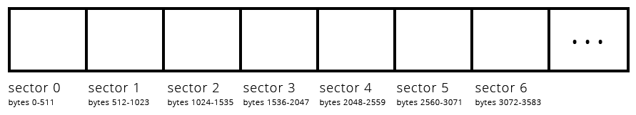
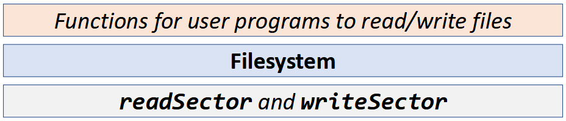
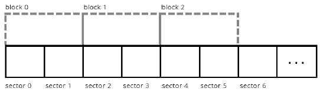
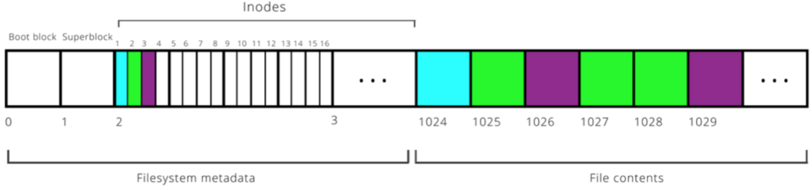
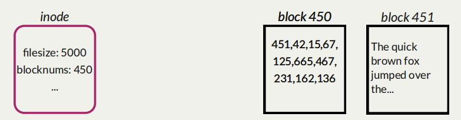
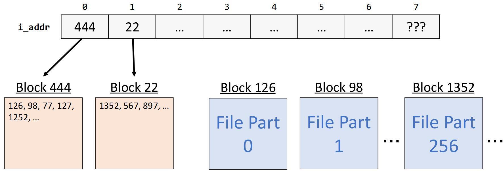
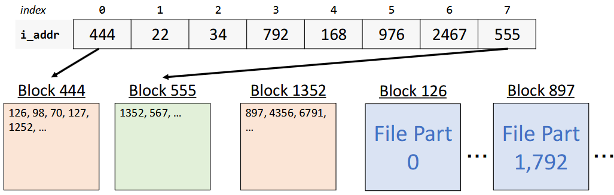
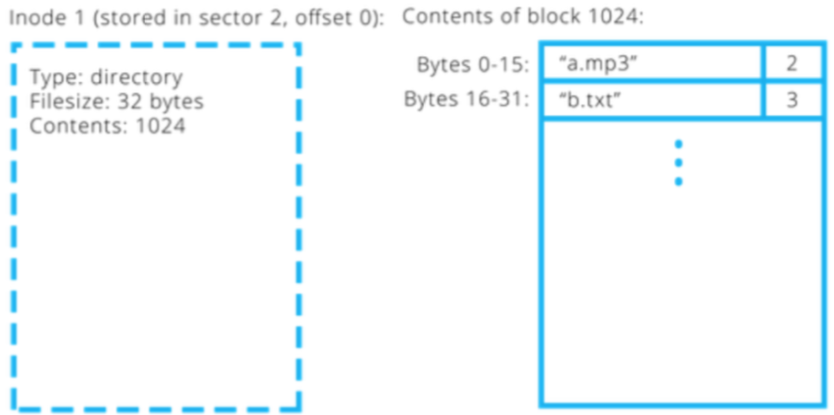
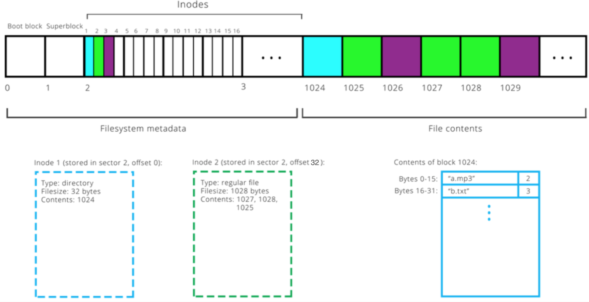

Filesystem Design¶
Data Storage and Access¶
The stack, heap and other segments of program data live in memory (RAM)
fast
byte-addressable: can quickly access any byte of data by address, but not individual bits by address
not persistent - cannot store data between power-offs
The filesystem lives on disk (eg. hard drives)
slower
persistent - stores data between power-offs
sector-addressable: cannot read/write just one byte of data - can only read/write “sectors” of data
Sector-Addressable¶
Hard disks are sector-addressable: cannot read/write just one byte of data - can only read/write “sectors” of data. (We will work with a sector size of 512; but size is determined by the physical drive).

A hard disk is sector-addressable¶
If we are the OS, the hard disk creators might provide this API (“application programming interface”)——a set of public functions——to interface with the disk:
void readSector(size_t sectorNumber, void* data); void writeSector(size_t sectorNumber, const void* data);
This is all we get! We (the OS) must build a filesystem by layering functions on top of these to ultimately allow us to read, write, lookup, and modify entire files.
How do we use
readSector? Here are some examples:char text[512]; readSector(5, text); // Now text contains the contents of sector 5 int nums[512 / sizeof(int)]; readSector(6, nums); // Now nums contains the contents of sector 6
How do we use
writeSector? Here are some examples:char text[512] = "Hello, world!"; writeSector(5, text); // Now sector 5 contains "Hello, world!" (and \0) // followed by garbage values. int nums[512 / sizeof(int)]; readSector(6, nums); nums[15] = 22; writeSector(6, nums); // Now sector 6 is updated to change its 16th number to be 22.
{kind=link}
Filesystem Goals¶
We want to read/write file on disk and have them persist even when the device is off.
This may include operations like:
creating a new file on disk
looking up the location of a file on disk
reading/editing all or part of an existing file from disk, e.g. sequential and random access
creating folders on disk
getting the contents of folders on disk
…

Case Study: The Unix v6 Filesystem¶
We will use the Unix Version 6 Filesystem to see an example of filesystem design.
From around 1975; well-designed, open-source filesystem.
Great example of a well-thought-out, layered engineering design.
Not the only filesystem design - each has tradeoffs. Modern file systems (particularly for Linux) are, in general, descendants of this file system, but they are more complex and geared towards high performance and fault tolerance.
Details we discuss (e.g. “size of a sector”) are specific to this filesystem design, but general principles apply to modern operating systems.
Some other filesystems are open source and viewable if you’re interested (e.g., the ext4 filesystem, which is the most common Unix file system right now).
Our discussion will highlight various design questions as we go. Consider the pros/cons of this approach vs. alternatives!
Sectors and Blocks¶
A filesystem generally defines its own unit of data, a “block” that it reads/writes at a time.
Sector: hard disk storage unit
Block: filesystem storage unit (1 or more sectors) - software abstraction

Example: the block size could be defined as two sectors¶
The Unix V6 Filesystem defines a block to be 1 sector (so they are interchangeable).
{kind=link}
Thinking
Pros of larger block size? Smaller block size?
More efficient I/O if larger, but less internal fragmentation if smaller
Storing Data on Disk¶
Two types of data we will be working with:
File payload data: contents of files (e.g. text in documents, pixels in images)
File metadata: information about files (e.g. name, size)
Key insight
Both of these must be stored on the hard disk. Otherwise, we will not have it across power-offs! (E.g. without storing metadata we would lose all filenames after shutdown). This means some blocks must store metadata other than payload data.
File Payload Data¶
Design questions to consider:
How do we handle small files < 512 bytes?
Still reserve entire block (most do this). Reserving partial blocks may better utilize space, but more complex to implement
For files spanning multiple blocks, must their blocks be adjacent?
No.
Fragmentation
Internal Fragmentation: space allocated for a file is larger than what is needed. A file may not take up all the space in the blocks it’s using. E.g. block = 512 bytes, but file is only 300 bytes. (you could share blocks between multiple files, but this gets complex)
External Fragmentation (issue with contiguous allocation): no single space is large enough to satisfy an allocation request, even though enough aggregate free disk space is available
File Metadata¶
Problem
How do we know what block numbers store a given file’s data?
We need somewhere to store information about each file, such as which block numbers store its payload data. Ideally, this data would be easy to look up as needed.
Inodes¶
An inode (“index node”) is a grouping of data about a single file. It stores things like:
file size
ordered list of block numbers that store file payload data
An inode is 32 bytes big in this filesystem. The full definition of an inode has much more; but we focus just on size (
i_size0andi_size1) and block numbers (i_addr[8]).
struct inode {
uint16_t i_mode; // bit vector of file type and permissions
uint8_t i_nlink; // number of references to file
uint8_t i_uid; // owner
uint8_t i_gid; // group of owner
uint8_t i_size0; // most significant byte of size
uint16_t i_size1; // lower two bytes of size (size is encoded
// in a three-byte number)
uint16_t i_addr[8]; // device addresses constituting file
uint16_t i_atime[2]; // access time
uint16_t i_mtime[2]; // modify time
};
The filesystem stores inodes on disk together in the inode table for quick access.
Inodes are stored in a reserved region starting at block 2 (block 0 is “boot block” containing hard drive info, block 1 is “superblock” containing filesystem info).
Typically at most 10% of the drive stores metadata.
Filesystem goes from filename to inode number (“inumber”) to file data.
{kind=link}

Example: 16 inodes fit in a single block here.¶
We need inodes to be a fixed size, and not too large. So how should we store the block numbers? How many should there be?
if variable number, there’s no fixed inode size
if fixed number, this limits maximum file size
The inode design here has space for 8 block numbers. But we will see later how we can build on this to support very large files.
Access Inodes¶
Let’s imagine that the hard disk creators provide software to let us interface with the disk.
void readSector(size_t sectorNumber, void* data); void writeSector(size_t sectorNumber, const void* data);
How do we access
inode? E.g. how can we iterate over inodes 17-32?typedef struct inode { uint16_t i_addr[8]; // device addresses constituting file ... } inode; // Loop over each inode in sector 2 inode inodes[512 / sizeof(inode)]; readSector(2, inodes); for (size_t i = 0; i < sizeof(inodes) / sizeof(inodes[0]); i++) { ... }
Indirect Addressing¶
Problem
With 8 block numbers per inode, the largest a file can be is 512 * 8 = 4096 bytes (~4KB). That defifinitely isn’t realistic!
Let’s say a file’s payload is stored across 10 blocks:
451, 42, 15, 67, 125, 665, 467, 231, 162, 136
Assuming that the size of an
inodeis fixed, where can we put these block numbers?Solution: Let’s store them in a block, and then store that block’s number in the inode!

Indirect addressing is useful, but means that it takes more steps to get to the data, and we may use more blocks than we need.
Design questions:
Should we make all the block numbers in an
inodeuse indirect addressing?Just some.
Should we use this approach for all files, or just large ones?
Just large ones.
{kind=link}
Singly-Indirect Addressing¶
The Unix V6 filesystem uses singly-indirect addressing (blocks that store payload block numbers) just for large files.
Check flag or size in
inodeto know whether it is a small file (direct addressing) or large one (indirect addressing):If small, all 8 block numbers are direct block numbers that store file data
If large, first 7 block numbers are singly-indirect block numbers which stores direct block numbers for payload data
8th block number? we’ll get to that.

Let’s assume for now that an inode for a large file uses all 8 block numbers for singly indirect addressing. Each block number is 2 bytes big. What is the largest file size this supports?
8 (block numbers in an inode) × 256 (block numbers per singly-indirect block) × 512 (bytes per block) = ~1MB
{kind=link}
Doubly-Indirect Addressing¶
Problem
Even with singly-indirect addressing, the largest a file can be is 8 * 256 * 512 = 1,048,576 bytes (~1MB). That still isn’t realistic!
Solution: Let’s have the 8th entry in
i_addruse doubly-indirect addressing; store a block number for a block that contains singly-indirect block numbers.If the file is large, the first 7 entries in
i_addrare singly-indirect block numbers (block numbers of blocks that contain direct block numbers). The 8th entry (if needed) is a doubly-indirect block number (the number of a block that contains singly-indirect block numbers).
The Unix V6 filesystem uses singly-indirect addressing (blocks that store payload block numbers) just for large files. It also uses doubly-indirect addressing (blocks that store singly-indirect block numbers).
Check flag or size in
inodeto know whether it is a small file (direct addressing) or large one (indirect addressing):If small, all 8 block numbers are direct block numbers that store file data
If large, first 7 block numbers are singly-indirect block numbers which stores direct block numbers for payload data
NEW: If larger, 8th block number are doubly-indirect block numbers which stores singly-indirect block numbers
In other words; a file can be represented using at most 256 + 7 = 263 singly-indirect blocks. The first seven are stored in the inode. The remaining 256 are stored in a block whose block number is stored in the inode.
263 (singly-indirect block numbers total) x 256 (block numbers per singly-indirect block) x 512 (bytes per block) = ~34MB
Better! But still not sufficient for today’s standards, but perhaps in 1975. Moreover, since block numbers are 2 bytes, we can number at most \(2^{16} - 1 = 65,535\) blocks, meaning the entire filesystem can be at most 65,535 * 512 ~ 32MB.
{kind=link}
Directory¶
Problem
Now we understand how files are stored, but how do we find them?
The Directory Hierarchy¶
Filesystems usually support directories (“folders”)
A directory can contain files and more directories
All files live within the root directory, “
/”.We can specify the location of a file via the path to it from the root directory:
/classes/cs103/index.html
Common filesystem task: given a filepath, get the file’s contents.
Directories as Files¶
Problem
How can we store directories on disk?
Key idea: let’s model a directory as a file. We have already designed support for storing payloads and metadata. Why not use it?
A directory is a file container. It needs to store what files/folders are contained within it. It also has associated metadata.
Have an inode for each directory
A directory’s “payload data” is a list of info about the files it contains
A directory’s “metadata” is information about it such as its owner
Inodes can store a field telling us whether something is a directory or file
We can layer support for directories right on top of our implementation for files!
Representing Directories¶
Design decision: the Unix V6 filesystem makes directory payloads contain a 16 byte entry for each file/folder that is in that directory.
The first 14 bytes are the name (not necessarily null-terminated!)
The last two bytes are the inumber

{kind=link}
The Lookup Process¶
Given the inode for a directory, how could we find the inumber for a file it contains called “b.txt”?

The lookup process for
/classes/cs103/index.html:Start at the root directory
/In the root directory, find the entry named “classes”.
In the “classes” directory, find the entry named “cs103”.
In the “cs103” directory, find the entry named “index.html”. Then read its contents.
The root directory (”
/”) is set to have inumber 1. That way we always know where to go to start traversing. (0 is reserved to mean “NULL” or “no inode”).Go to
inodewith inumber 1 (root directory).In its payload data, look for the entry “classes” and get its
inumber. Go to thatinode.In its payload data, look for the entry “cs103” and get its inumber. Go to that
inode.In its payload data, look for the entry “index.html” and get its
inumber. Go to thatinodeand read in its payload data.
Key idea
Unix V6 directories are what map filenames to inode numbers in the filesystem. Filenames are not stored in inodes; they are stored in directories. Thefore, file lookup must happen via directories.
Hard/Soft Links¶
Hard Links¶
It’s possible for two different filenames to resolve to the same
inumber.Useful if you want multiple copies of a file without having to duplicate its contents.
If you change the contents of one, the contents of all of them change.
The
inodestores the number of names that resolve to thatinode,i_nlink. When that number is 0, and no programs are reading it, the file is deleted.What we are describing here is called a hard link. All normal files in Unix (and Linux) are hard links, and two hard links are indistinguishable as far as the file they point to is concerned. In other words, there is no “real” filename, as both file names point to the same
inode.In Unix, you can create a link using the
lncommand.
Soft Links¶
In addition to hard links, the Unix filesystem has the ability to create soft links. A soft link is a special file that contains the path of another file, and has no reference to the
inumber.Soft links can “break” in the sense that if the path they refer to is gone (e.g., the file is actually removed from the disk), then the link will no longer work.
To create a soft link in Unix, use the
-sflag withln.cs103@stickmind:/tmp$ echo "This is some text in a file" > file1 cs103@stickmind:/tmp$ ls -l file* -rw------- 1 cs103 operator 28 Sep 27 09:57 file1 cs103@stickmind:/tmp$ ln -s file1 file2 cs103@stickmind:/tmp$ ls -l file* -rw------- 1 cs103 operator 28 Sep 27 09:57 file1 lrwxrwxrwx 1 cs103 operator 5 Sep 27 09:58 file2 -> file1 cs103@stickmind:/tmp$ echo "Here is some more text." >> file2 cs103@stickmind:/tmp$ cat file1 This is some text in a file Here is some more text. cs103@stickmind:/tmp$ rm file1 rm: remove regular file 'file1'? y cs103@stickmind:/tmp$ ls -l file* lrwxrwxrwx 1 cs103 operator 5 Sep 27 09:58 file2 -> file1 cs103@stickmind:/tmp$ cat file2 cat: file2: No such file or directory cs103@stickmind:/tmp$
When we create a soft link,
lsgives us the path to the original fileBut, the reference count for the original file remains unchanged
Again, changing the contents of the file via either filename changes the file.
If we delete the original file, the soft link breaks! The soft link remains, but the path it refers to is no longer valid. If we had removed the soft link before the file, the original file would still remain.
Summary¶
The Unix V6 Filesystem is a well-engineered filesystem that makes many design decisions for how to represent files and directories.
Every file has an inode (stores block numbers and other metadata)
“small” (up to 8 direct) or “large” (up to 7 singly-indirect and 1 doubly-indirect)
Every directory also has an inode. Directories store directory entries.
Directory entry = inumber + name
We leverage directories to look up by name
For looking up by absolute path, we start at root directory (inumber 1)
Enjoy!